Taktarten Lückentext mit Wortspeicher Hörverstehen und Suchsel
Suchauftrag Lückentext mit Wortspeicher Hörverstehen und Suchsel
Stimmlage Lückentext mit Wortspeicher Hörverstehen und Suchsel
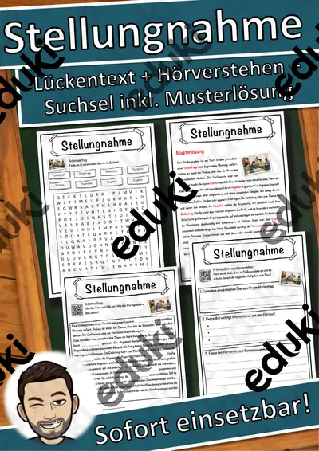
Stellungnahme Lückentext mit Wortspeicher Hörverstehen und Suchsel
Sonderzeichen Lückentext mit Wortspeicher Hörverstehen und Suchsel
Sinfonische Dichtung Lückentext mit Wortspeicher Hörverstehen und Suchsel

Simultankontrast Lückentext mit Wortspeicher Hörverstehen und Suchsel

Schulgottesdienst Lückentext mit Wortspeicher Hörverstehen und Suchsel
Reiz-Reaktions-Kette Lückentext mit Wortspeicher Hörverstehen und Suchsel
Reisekönigtum Lückentext mit Wortspeicher Hörverstehen und Suchsel

Reinstoff Lückentext mit Wortspeicher Hörverstehen und Suchsel

Reflexbogen Lückentext mit Wortspeicher Hörverstehen und Suchsel
Politische Werbung Lückentext mit Wortspeicher Hörverstehen und Suchsel
Plattengrenzen Lückentext mit Wortspeicher Hörverstehen und Suchsel

Planet Mars Lückentext mit Wortspeicher Hörverstehen und Suchsel

Planet Jupiter Lückentext mit Wortspeicher Hörverstehen und Suchsel
Peripheriegeräte Lückentext mit Wortspeicher Hörverstehen und Suchsel
Pariser Klimaabkommen Lückentext mit Wortspeicher Hörverstehen und Suchsel
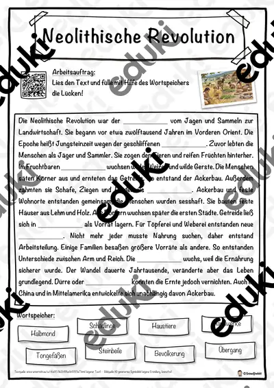
Neolithische Revolution Lückentext mit Wortspeicher Hörverstehen und Suchsel
Multinationale Konzerne Lückentext mit Wortspeicher Hörverstehen und Suchsel
Mittelalterliches Königtum Lückentext mit Wortspeicher Hörverstehen und Suchsel

Mischfarben Lückentext mit Wortspeicher Hörverstehen und Suchsel

Mikronährstoffe Lückentext mit Wortspeicher Hörverstehen und Suchsel

Makronährstoffe Lückentext mit Wortspeicher Hörverstehen und Suchsel

Magensäure Lückentext mit Wortspeicher Hörverstehen und Suchsel
Lichtsymbolik Lückentext mit Wortspeicher Hörverstehen und Suchsel
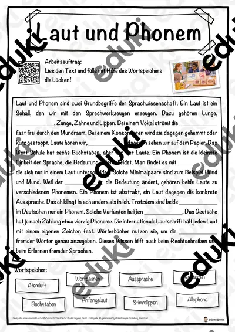
Laut und Phonem Lückentext mit Wortspeicher Hörverstehen und Suchsel

Lateralität Lückentext mit Wortspeicher Hörverstehen und Suchsel

Körperhaltung Lückentext mit Wortspeicher Hörverstehen und Suchsel

Kirchenjahr Lückentext mit Wortspeicher Hörverstehen und Suchsel

Josef und seine Brüder Lückentext mit Wortspeicher Hörverstehen und Suchsel

Hoffnung auf Vollendung Lückentext mit Wortspeicher Hörverstehen und Suchsel

Hochdruckgebiet Lückentext mit Wortspeicher Hörverstehen und Suchsel

Himmelfahrt Lückentext mit Wortspeicher Hörverstehen und Suchsel

Hell-Dunkel-Kontrast Lückentext mit Wortspeicher Hörverstehen und Suchsel

Heliozentrisches Weltbild Lückentext mit Wortspeicher Hörverstehen und Suchsel

Händigkeit Lückentext mit Wortspeicher Hörverstehen und Suchsel

Gottesdienst Lückentext mit Wortspeicher Hörverstehen und Suchsel
Globaler Wandel Lückentext mit Wortspeicher Hörverstehen und Suchsel
Gewissensfreiheit Lückentext mit Wortspeicher Hörverstehen und Suchsel

Gesunde Ernährung Lückentext mit Wortspeicher Hörverstehen und Suchsel
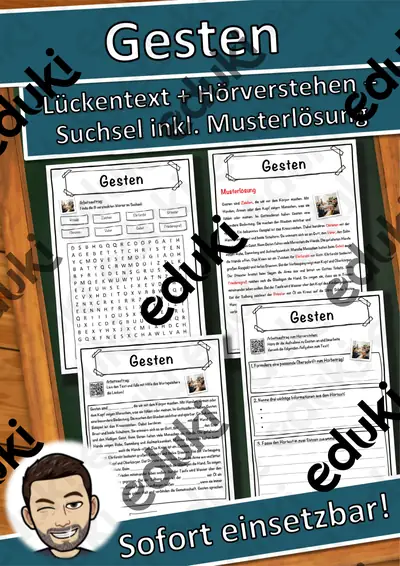
Gesten Lückentext mit Wortspeicher Hörverstehen und Suchsel

Geschöpf Lückentext mit Wortspeicher Hörverstehen und Suchsel
Geschäftsmodell Lückentext mit Wortspeicher Hörverstehen und Suchsel
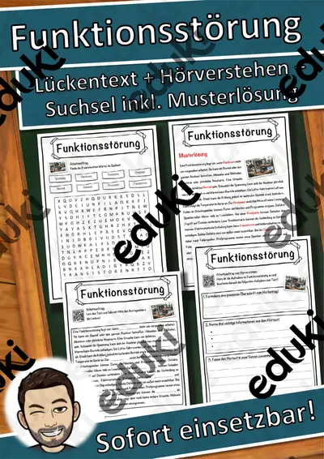
Funktionsstörung Lückentext mit Wortspeicher Hörverstehen und Suchsel
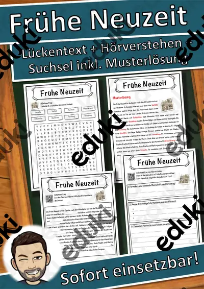
Frühe Neuzeit Lückentext mit Wortspeicher Hörverstehen und Suchsel
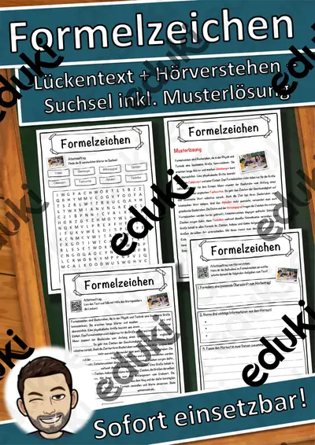
Formelzeichen Lückentext mit Wortspeicher Hörverstehen und Suchsel
Form folgt Funktion Lückentext mit Wortspeicher Hörverstehen und Suchsel
Filtration Lückentext mit Wortspeicher Hörverstehen und Suchsel
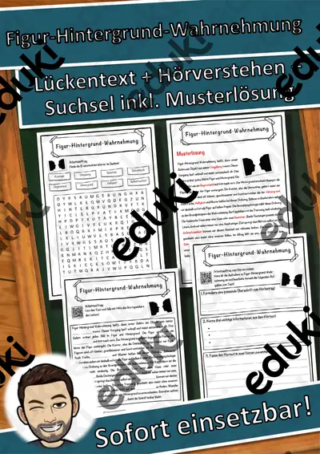
Figur-Hintergrund-Wahrnehmung Lückentext mit Wortspeicher Hörverstehen und Suchsel

Felsformation Lückentext mit Wortspeicher Hörverstehen und Suchsel
Feder und Tusche Lückentext mit Wortspeicher Hörverstehen und Suchsel

Farbwirkung Lückentext mit Wortspeicher Hörverstehen und Suchsel
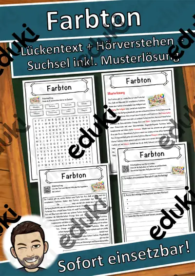
Farbton Lückentext mit Wortspeicher Hörverstehen und Suchsel
Farbsättigung Lückentext mit Wortspeicher Hörverstehen und Suchsel
Farbe-an-sich-Kontrast Lückentext mit Wortspeicher Hörverstehen und Suchsel
Familiennamen Lückentext mit Wortspeicher Hörverstehen und Suchsel

Ewigkeitssonntag Lückentext mit Wortspeicher Hörverstehen und Suchsel
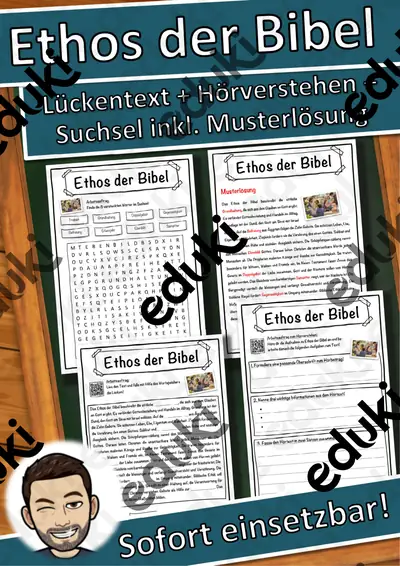
Ethos der Bibel Lückentext mit Wortspeicher Hörverstehen und Suchsel

Erwartung Lückentext mit Wortspeicher Hörverstehen und Suchsel

Erstkommunion Lückentext mit Wortspeicher Hörverstehen und Suchsel
Epochengliederung Lückentext mit Wortspeicher Hörverstehen und Suchsel

Epiphanias Lückentext mit Wortspeicher Hörverstehen und Suchsel
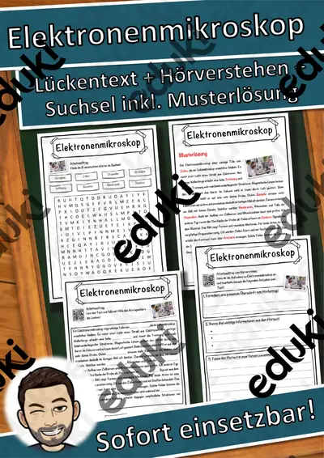
Elektronenmikroskop Lückentext mit Wortspeicher Hörverstehen und Suchsel

Einzigartigkeit der Erde Lückentext mit Wortspeicher Hörverstehen und Suchsel

Die Farbe Rot Lückentext mit Wortspeicher Hörverstehen und Suchsel

Die Farbe Blau Lückentext mit Wortspeicher Hörverstehen und Suchsel
Computermusik Lückentext mit Wortspeicher Hörverstehen und Suchsel

Computeranlage Lückentext mit Wortspeicher Hörverstehen und Suchsel

Buße und Umkehr Lückentext mit Wortspeicher Hörverstehen und Suchsel

Brennen von Ton Lückentext mit Wortspeicher Hörverstehen und Suchsel

Blickkontakt Lückentext mit Wortspeicher Hörverstehen und Suchsel

Bären – Hörverstehen mit Lückentext (interaktiv)

Butterfahrt – Hörverstehen mit Lückentext (interaktiv)

Burgund – Hörverstehen mit Lückentext (interaktiv)

Burgenland – Hörverstehen mit Lückentext (interaktiv)

Bunker – Hörverstehen mit Lückentext (interaktiv)

Bundestagswahl 2025 – Hörverstehen mit Lückentext (interaktiv)

Bumerang – Hörverstehen mit Lückentext (interaktiv)

Buddha – Hörverstehen mit Lückentext (interaktiv)

Buckingham Palace – Hörverstehen mit Lückentext (interaktiv)

Bewerbungsanschreiben Lückentext mit Wortspeicher Hörverstehen und Suchsel

Buckelwal – Hörverstehen mit Lückentext (interaktiv)

Buchen – Hörverstehen mit Lückentext (interaktiv)

Bewegungskoordination Lückentext mit Wortspeicher Hörverstehen und Suchsel
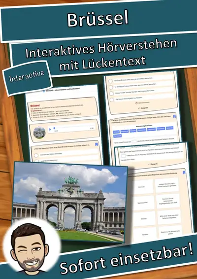
Brüssel – Hörverstehen mit Lückentext (interaktiv)
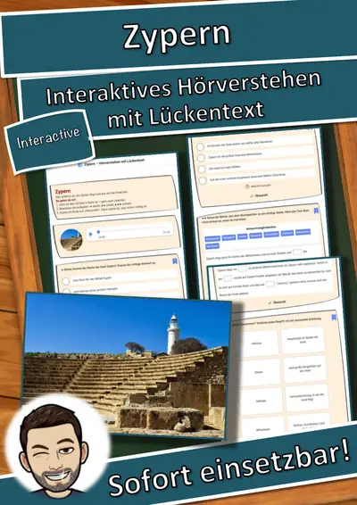
Zypern – Hörverstehen mit Lückentext (interaktiv)

Bretagne – Hörverstehen mit Lückentext (interaktiv)

Brügge – Hörverstehen mit Lückentext (interaktiv)

Bronzezeit – Hörverstehen mit Lückentext (interaktiv)
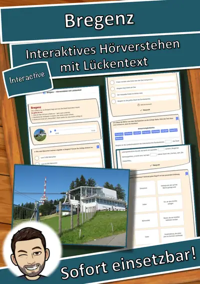
Bregenz – Hörverstehen mit Lückentext (interaktiv)

Braunbär – Hörverstehen mit Lückentext (interaktiv)
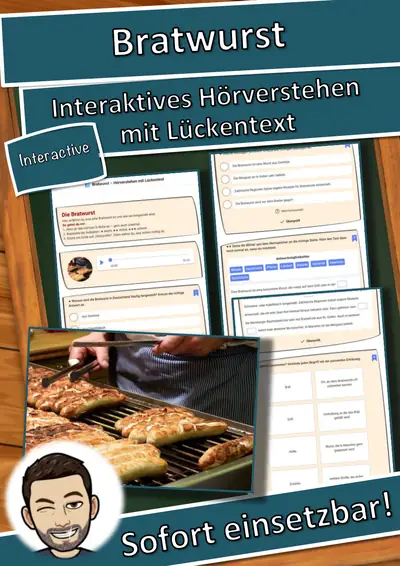
Bratwurst – Hörverstehen mit Lückentext (interaktiv)

Brombeere – Hörverstehen mit Lückentext (interaktiv)
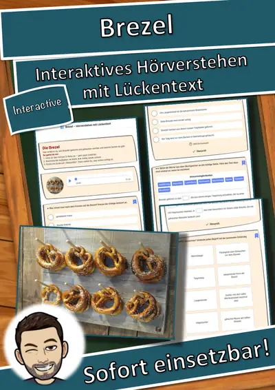
Brezel – Hörverstehen mit Lückentext (interaktiv)

Brandenburg an der Havel – Hörverstehen mit Lückentext (interaktiv)
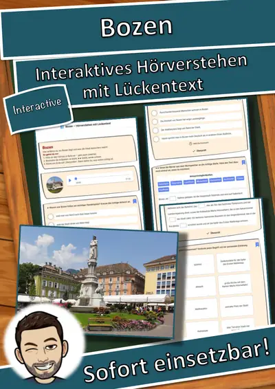
Bozen – Hörverstehen mit Lückentext (interaktiv)
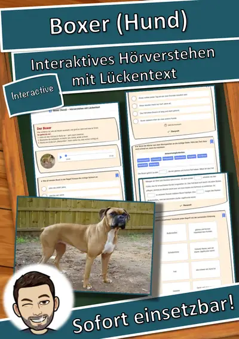
Boxer (Hund) – Hörverstehen mit Lückentext (interaktiv)

Boston – Hörverstehen mit Lückentext (interaktiv)
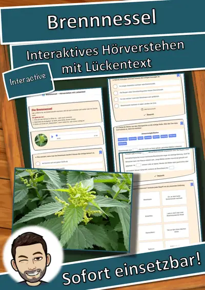
Brennnessel – Hörverstehen mit Lückentext (interaktiv)

Bremsen (Insekten) – Hörverstehen mit Lückentext (interaktiv)

Bosnien und Herzegowina – Hörverstehen mit Lückentext (interaktiv)

Borkum – Hörverstehen mit Lückentext (interaktiv)
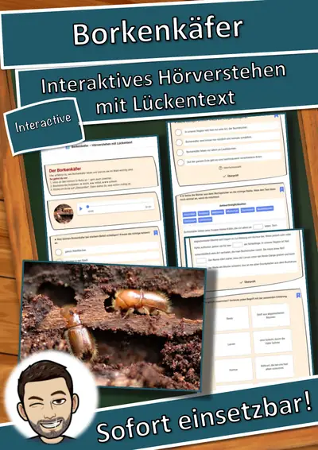
Borkenkäfer – Hörverstehen mit Lückentext (interaktiv)
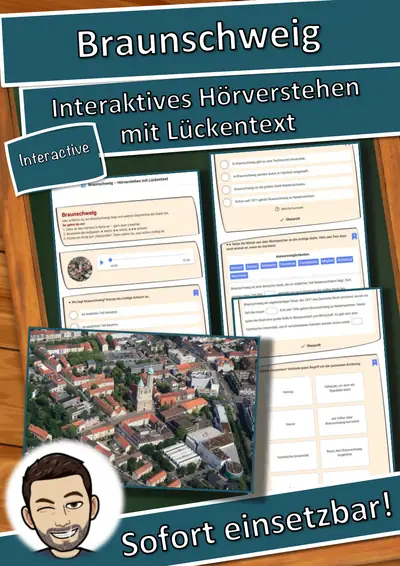
Braunschweig – Hörverstehen mit Lückentext (interaktiv)

Bolivien – Hörverstehen mit Lückentext (interaktiv)

Bochum – Hörverstehen mit Lückentext (interaktiv)

Blut – Hörverstehen mit Lückentext (interaktiv)

Blindschleiche – Hörverstehen mit Lückentext (interaktiv)

Blätterteig – Hörverstehen mit Lückentext (interaktiv)
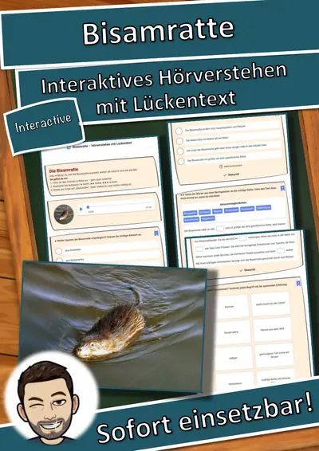
Bisamratte – Hörverstehen mit Lückentext (interaktiv)

Birmingham – Hörverstehen mit Lückentext (interaktiv)

Beherrschung des Feuers Lückentext mit Wortspeicher Hörverstehen und Suchsel

Berufsschule – Hörverstehen mit Lückentext (interaktiv)

Bernstein – Hörverstehen mit Lückentext (interaktiv)
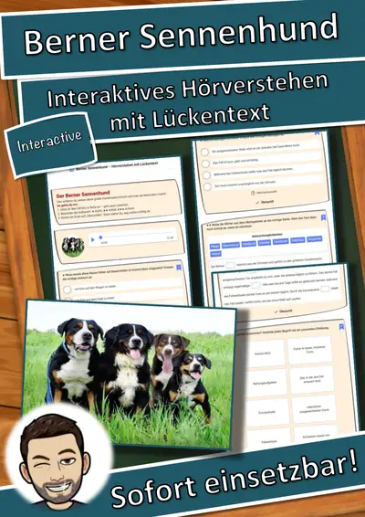
Berner Sennenhund – Hörverstehen mit Lückentext (interaktiv)
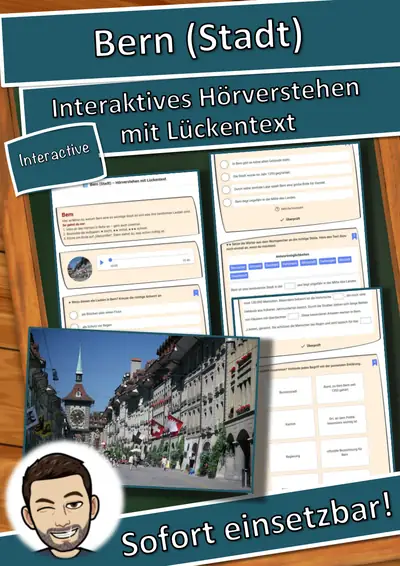
Bern (Stadt) – Hörverstehen mit Lückentext (interaktiv)

Bern (Kanton) – Hörverstehen mit Lückentext (interaktiv)

Bergisch Gladbach – Hörverstehen mit Lückentext (interaktiv)
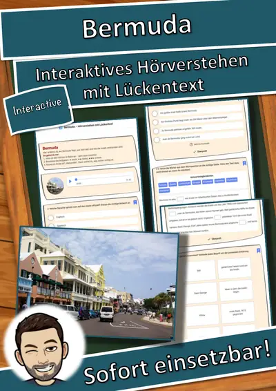
Bermuda – Hörverstehen mit Lückentext (interaktiv)

Berliner Mauer – Hörverstehen mit Lückentext (interaktiv)

Berliner Dom – Hörverstehen mit Lückentext (interaktiv)

Belarus – Hörverstehen mit Lückentext (interaktiv)

Beirut – Hörverstehen mit Lückentext (interaktiv)
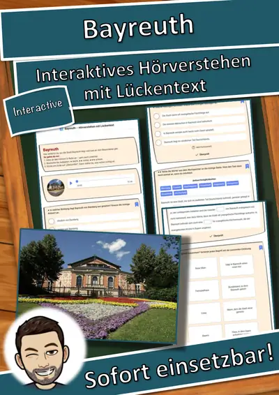
Bayreuth – Hörverstehen mit Lückentext (interaktiv)

Bayern – Hörverstehen mit Lückentext (interaktiv)
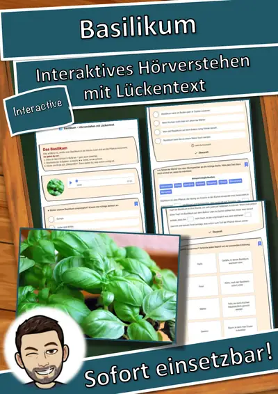
Basilikum – Hörverstehen mit Lückentext (interaktiv)

Basel – Hörverstehen mit Lückentext (interaktiv)

Barsche – Hörverstehen mit Lückentext (interaktiv)

Bangladesch – Hörverstehen mit Lückentext (interaktiv)

Bamberg – Hörverstehen mit Lückentext (interaktiv)

Begräbnis Lückentext mit Wortspeicher Hörverstehen und Suchsel
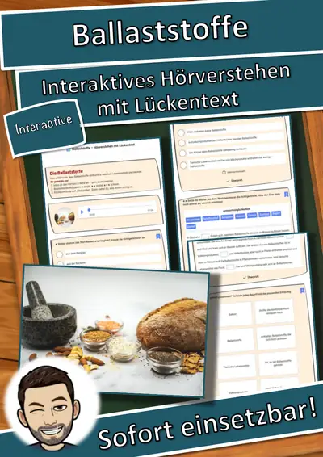
Ballaststoffe – Hörverstehen mit Lückentext (interaktiv)

Baku – Hörverstehen mit Lückentext (interaktiv)
Baby-Talk Lückentext mit Wortspeicher Hörverstehen und Suchsel

Baikalsee – Hörverstehen mit Lückentext (interaktiv)

Bahrain – Hörverstehen mit Lückentext (interaktiv)

Bahnhof – Hörverstehen mit Lückentext (interaktiv)

Bahamas – Hörverstehen mit Lückentext (interaktiv)
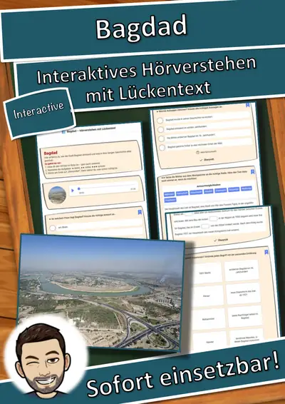
Bagdad – Hörverstehen mit Lückentext (interaktiv)

Azoren – Hörverstehen mit Lückentext (interaktiv)

Augsburger Puppenkiste – Hörverstehen mit Lückentext (interaktiv)

Atomenergie – Hörverstehen mit Lückentext (interaktiv)

Astana – Hörverstehen mit Lückentext (interaktiv)
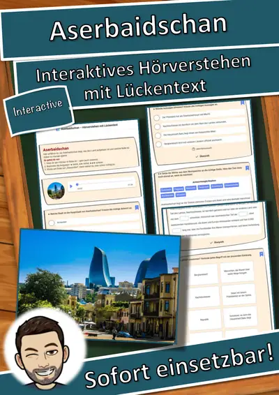
Aserbaidschan – Hörverstehen mit Lückentext (interaktiv)

Aschenputtel – Hörverstehen mit Lückentext (interaktiv)
Auge-Hand-Koordination Lückentext mit Wortspeicher Hörverstehen und Suchsel

Auftrieb Lückentext mit Wortspeicher Hörverstehen und Suchsel

Asche – Hörverstehen mit Lückentext (interaktiv)

Armenien – Hörverstehen mit Lückentext (interaktiv)

Armbrust – Hörverstehen mit Lückentext (interaktiv)
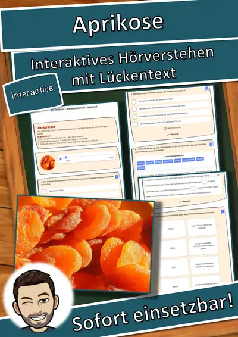
Aprikose – Hörverstehen mit Lückentext (interaktiv)

Aphrodite – Hörverstehen mit Lückentext (interaktiv)

Antwerpen – Hörverstehen mit Lückentext (interaktiv)
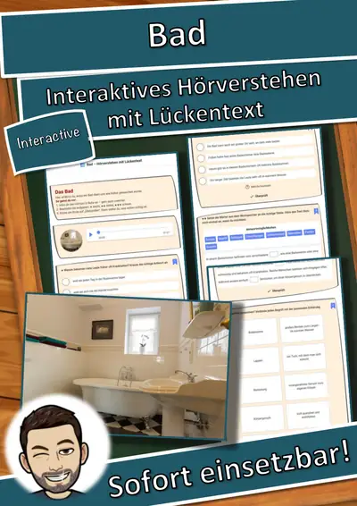
Bad – Hörverstehen mit Lückentext (interaktiv)
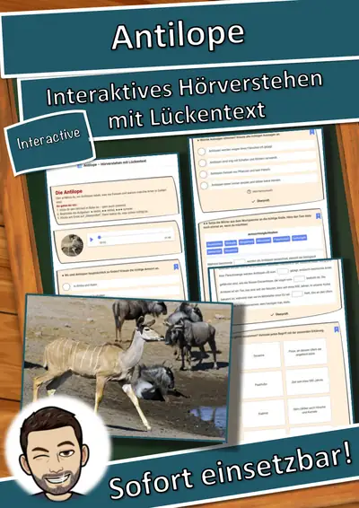
Antilope – Hörverstehen mit Lückentext (interaktiv)

Angkor Wat – Hörverstehen mit Lückentext (interaktiv)
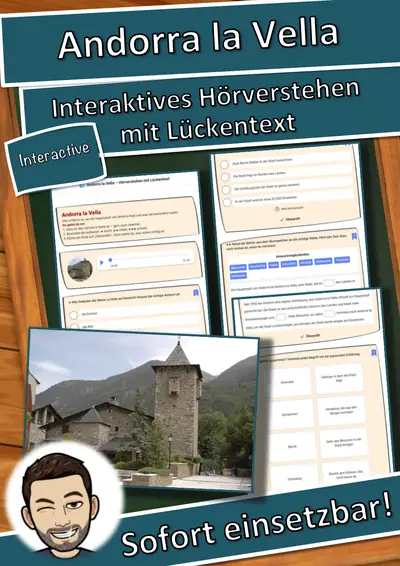
Andorra la Vella – Hörverstehen mit Lückentext (interaktiv)
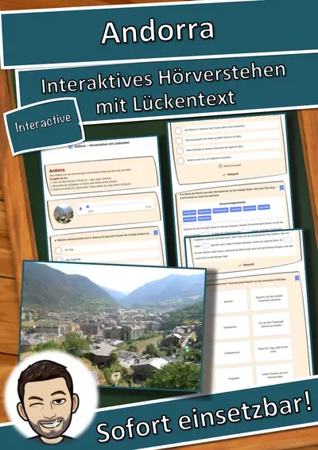
Andorra – Hörverstehen mit Lückentext (interaktiv)

Anatomie – Hörverstehen mit Lückentext (interaktiv)
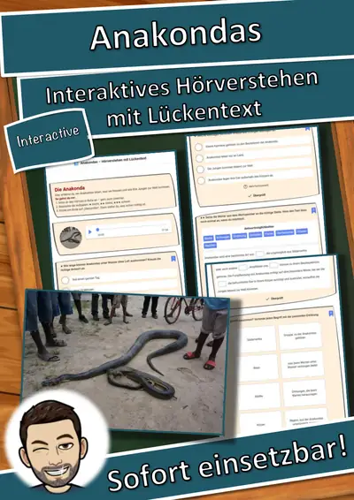
Anakondas – Hörverstehen mit Lückentext (interaktiv)

Amsterdam – Hörverstehen mit Lückentext (interaktiv)

Altsteinzeit – Hörverstehen mit Lückentext (interaktiv)

Axolotl – Hörverstehen mit Lückentext (interaktiv)

Altes Ägypten – Hörverstehen mit Lückentext (interaktiv)

Altes Griechenland – Hörverstehen mit Lückentext (interaktiv)
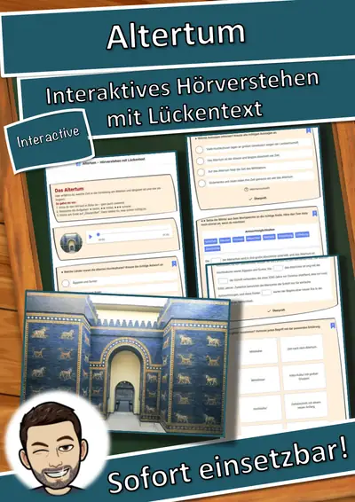
Altertum – Hörverstehen mit Lückentext (interaktiv)

Augsburg – Hörverstehen mit Lückentext (interaktiv)

Altai-Gebirge – Hörverstehen mit Lückentext (interaktiv)
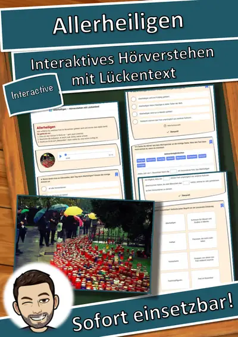
Allerheiligen – Hörverstehen mit Lückentext (interaktiv)
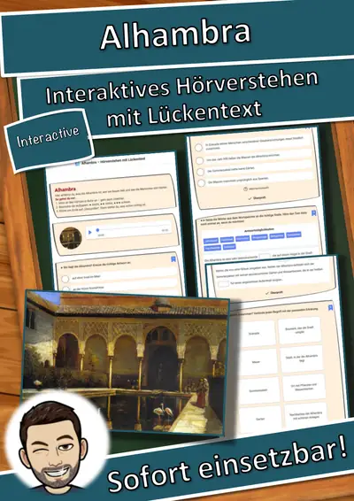
Alhambra – Hörverstehen mit Lückentext (interaktiv)

Algerien – Hörverstehen mit Lückentext (interaktiv)

Hörverstehen Algarve: interaktives Arbeitsblatt mit Lückentext (Klasse 5–6)
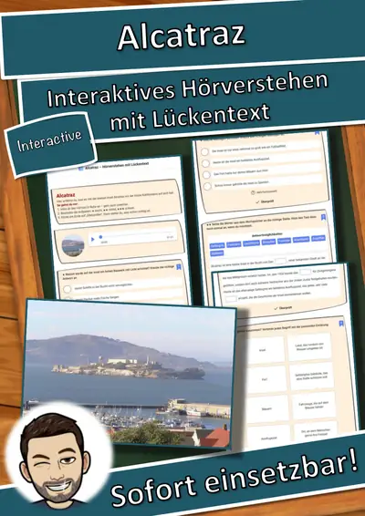
Alcatraz – Hörverstehen mit Lückentext (interaktiv)

Auferweckung Jesu Lückentext mit Wortspeicher Hörverstehen und Suchsel

Albanien – Hörverstehen mit Lückentext (interaktiv)

Apotheke – Hörverstehen mit Lückentext (interaktiv)
Atmung beim Sprechen Lückentext mit Wortspeicher Hörverstehen und Suchsel

Afghanistan – Hörverstehen mit Lückentext (interaktiv)
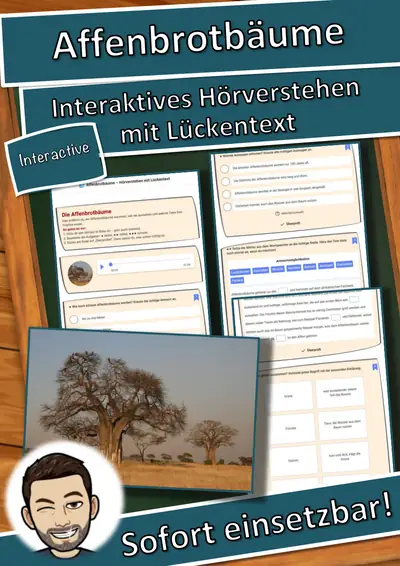
Affenbrotbäume – Hörverstehen mit Lückentext (interaktiv)
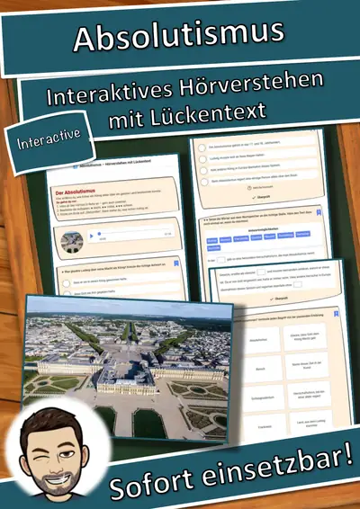
Absolutismus – Hörverstehen mit Lückentext (interaktiv)

Ameisen – Hörverstehen mit Lückentext (interaktiv)
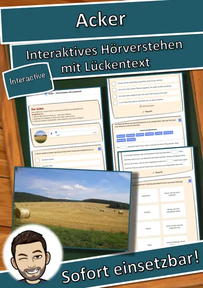
Acker – Hörverstehen mit Lückentext (interaktiv)
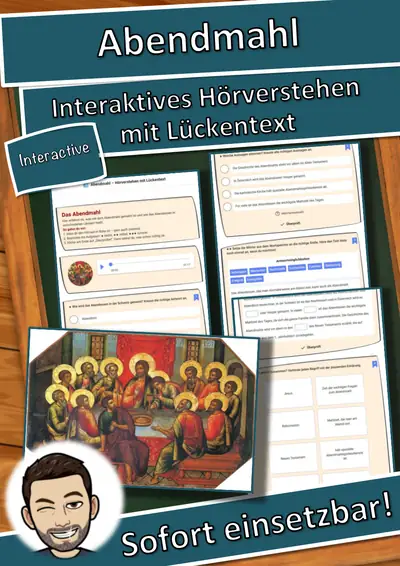
Abendmahl – Hörverstehen mit Lückentext (interaktiv)
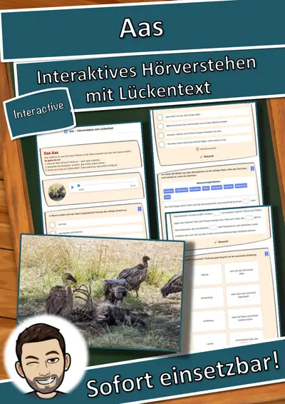
Aas – Hörverstehen mit Lückentext (interaktiv)

Aarhus – Hörverstehen mit Lückentext (interaktiv)
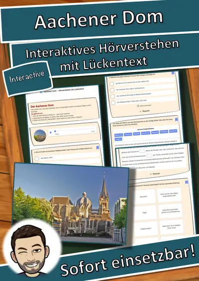
Aachener Dom – Hörverstehen mit Lückentext (interaktiv)

Algen – Hörverstehen mit Lückentext (interaktiv)

Alaska – Hörverstehen mit Lückentext (interaktiv)

Afrika – Hörverstehen mit Lückentext (interaktiv)
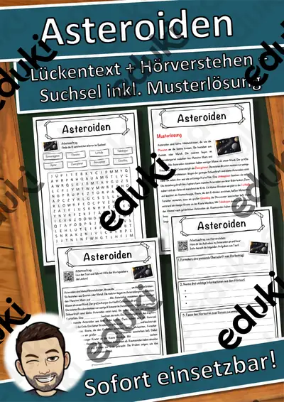
Asteroiden Lückentext mit Wortspeicher Hörverstehen und Suchsel
Aquarellmalerei Lückentext mit Wortspeicher Hörverstehen und Suchsel

Anschlag (Tastschreiben) Lückentext mit Wortspeicher Hörverstehen und Suchsel
Anreizsysteme Lückentext mit Wortspeicher Hörverstehen und Suchsel

Zunge – Hörverstehen mit Lückentext (interaktiv)

Zucker – Hörverstehen mit Lückentext (interaktiv)
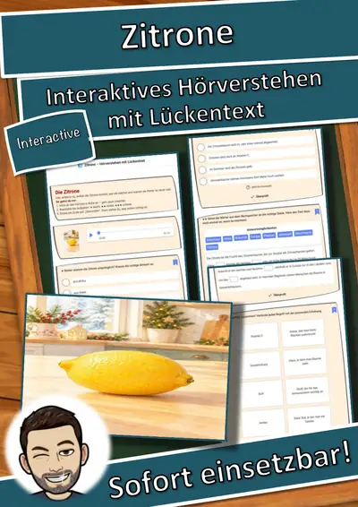
Zitrone – Hörverstehen mit Lückentext (interaktiv)
Zither – Hörverstehen mit Lückentext (interaktiv)
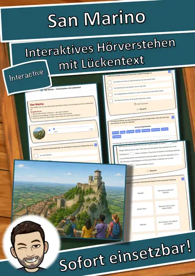
San Marino – Hörverstehen mit Lückentext (interaktiv)

Zirkus – Hörverstehen mit Lückentext (interaktiv)

Zirkel – Hörverstehen mit Lückentext (interaktiv)
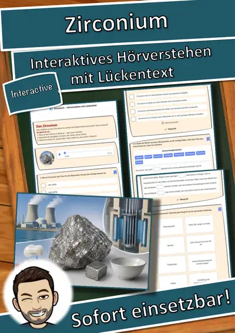
Zirconium – Hörverstehen mit Lückentext (interaktiv)
Zelt – Hörverstehen mit Lückentext (interaktiv)

Zeitung – Hörverstehen mit Lückentext (interaktiv)
Zeichnung – Hörverstehen mit Lückentext (interaktiv)
Zebrastreifen – Hörverstehen mit Lückentext (interaktiv)

Zebras – Hörverstehen mit Lückentext (interaktiv)
Zander – Hörverstehen mit Lückentext (interaktiv)

Zahnrad – Hörverstehen mit Lückentext (interaktiv)

Zahnpasta – Hörverstehen mit Lückentext (interaktiv)
Zahnbürste – Hörverstehen mit Lückentext (interaktiv)

Yoga – Hörverstehen mit Lückentext (interaktiv)

Xylophon – Hörverstehen mit Lückentext (interaktiv)
Woche – Hörverstehen mit Lückentext (interaktiv)

Wintersport – Hörverstehen mit Lückentext (interaktiv)

Winterschlaf – Hörverstehen mit Lückentext (interaktiv)

Winter – Hörverstehen mit Lückentext (interaktiv)

Windrad – Hörverstehen mit Lückentext (interaktiv)

Wind – Hörverstehen mit Lückentext (interaktiv)
Wimmelbild – Hörverstehen mit Lückentext (interaktiv)
Wildtiere – Hörverstehen mit Lückentext (interaktiv)

Wildschwein – Hörverstehen mit Lückentext (interaktiv)

Weihnachten – Hörverstehen mit Lückentext (interaktiv)

Alphanumerische Tastatur Lückentext mit Wortspeicher Hörverstehen und Suchsel

Wiesel – Hörverstehen mit Lückentext (interaktiv)

Wiese – Hörverstehen mit Lückentext (interaktiv)

Abendrot Lückentext mit Wortspeicher Hörverstehen und Suchsel
Wien – Hörverstehen mit Lückentext (interaktiv)
Westerstede – Hörverstehen mit Lückentext (interaktiv)

Wespen – Hörverstehen mit Lückentext (interaktiv)

Werkzeug – Hörverstehen mit Lückentext (interaktiv)

Wellington – Hörverstehen mit Lückentext (interaktiv)

Wellensittich – Hörverstehen mit Lückentext (interaktiv)

Weißtanne – Hörverstehen mit Lückentext (interaktiv)

Weißstorch – Hörverstehen mit Lückentext (interaktiv)

Weintraube – Hörverstehen mit Lückentext (interaktiv)

Weilburg – Hörverstehen mit Lückentext (interaktiv)

Wasser – Hörverstehen mit Lückentext (interaktiv)
Wartburg – Hörverstehen mit Lückentext (interaktiv)
Wasserturm – Hörverstehen mit Lückentext (interaktiv)
Keine Materialien gefunden – versuch einen anderen Suchbegriff oder Filter.
Aufbau eines Lückentextes mit Wortspeicher
Im Zentrum steht ein kindgerechter Sachtext, aus dem die Fachbegriffe entfernt wurden. Der Wortspeicher listet die fehlenden Wörter auf, sodass es um Verstehen geht und nicht um Raten. Ein Suchsel greift dieselben Begriffe noch einmal auf und festigt die Schreibweise.
Über einen QR-Code lässt sich der Text zusätzlich anhören. Das hilft schwächeren Leserinnen und Lesern und schafft nebenbei eine Übung im Hörverstehen.
Einsatz im Unterricht
Die Blätter sind für Stationenarbeit, Wochenplan und Vertretungsstunden gedacht. Weil jedes Blatt eine Lösung mitbringt, lässt es sich auch ohne Einführung austeilen.
In Klassen mit unterschiedlichem Sprachstand hat sich bewährt, zuerst die Hörfassung anzubieten und den Lückentext danach ausfüllen zu lassen.
Häufige Fragen
Ist der Wortspeicher immer dabei?
Ja. Alle fehlenden Wörter stehen im Wortspeicher, damit der Schwerpunkt auf dem Textverständnis liegt.
Gibt es zu jedem Blatt eine Lösung?
Ja, jedes Material enthält eine Musterlösung.
Wie funktioniert das Hörverstehen?
Der QR-Code auf dem Blatt führt direkt zur Audiofassung des Sachtextes. Eine zusätzliche App wird nicht benötigt.